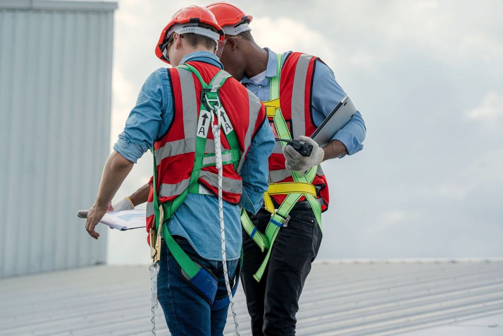
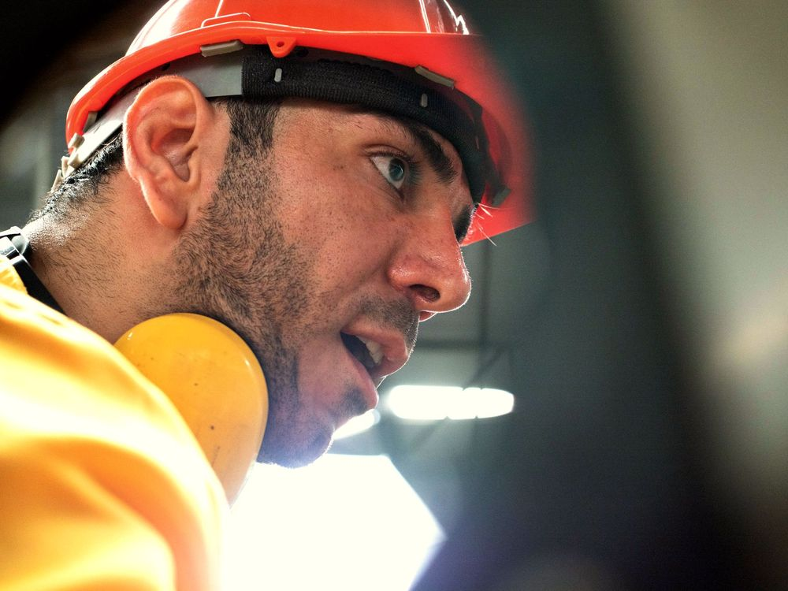
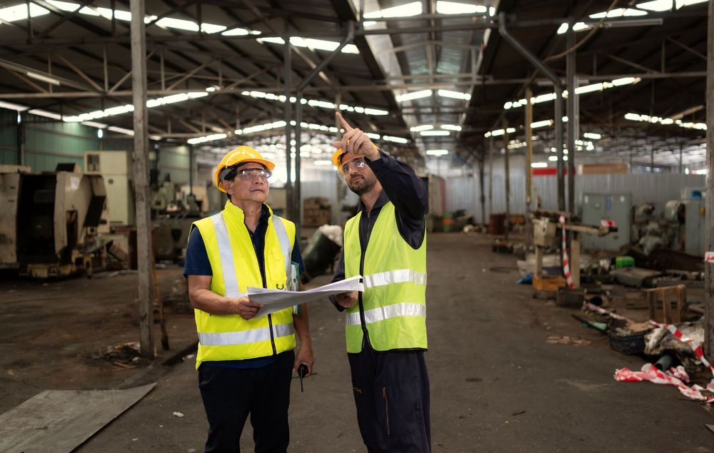
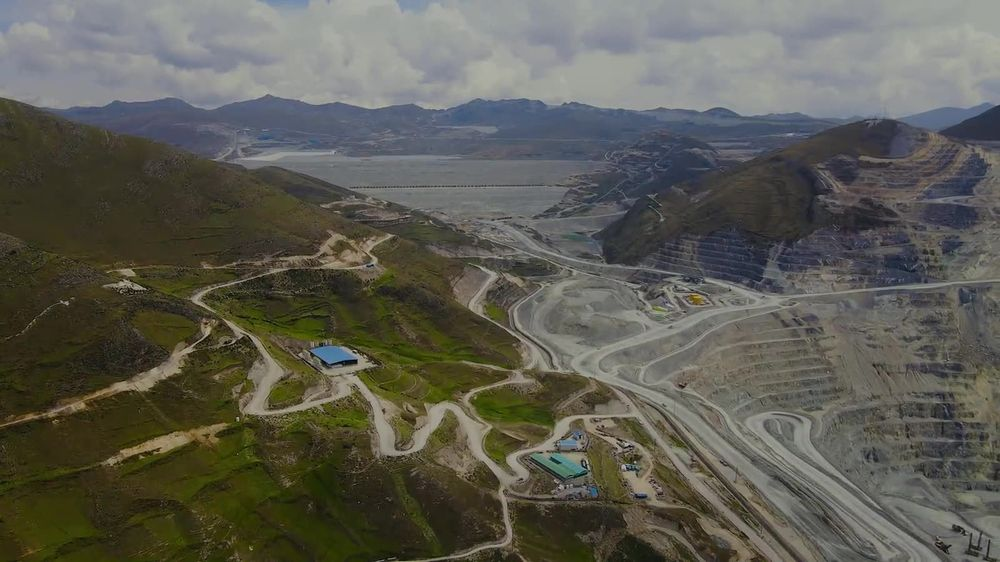
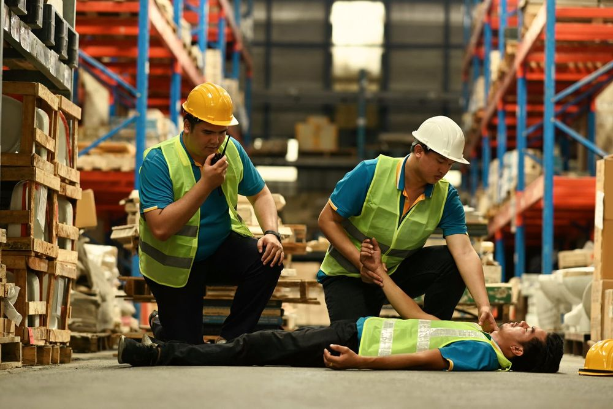

Consultoría y asesoría
Diagnóstico preciso y recomendaciones que la organización puede ejecutar con sus propios recursos.
- Diagnóstico inicial o línea base
- Matriz IPERC por puesto de trabajo
- Plan de acción priorizado por riesgo



Consultoría, capacitación, sistemas de gestión y equipos de protección para que la seguridad se vuelva un hábito de su gente.
Inspección en planta industrial
Cada recomendación se apoya en la Ley N.° 29783, su reglamento y en pruebas verificables.
Trabajo en campo hasta que el resultado se sostenga, no solo en el escritorio.
Un solo equipo responsable de la consultoría, la capacitación y los equipos.
El punto de partida
En 2025 las empresas notificaron al Ministerio de Trabajo 43 978 accidentes de trabajo. Cada número es una persona que salió a trabajar y una familia que la esperaba de vuelta.
Fuente: Ministerio de Trabajo y Promoción del Empleo, boletín estadístico de notificaciones de accidentes de trabajo, incidentes peligrosos y enfermedades ocupacionales, diciembre de 2025.
Dónde y cómo ocurren
Conocer el patrón es el primer paso para cortarlo. Explore los datos oficiales por año, sector, forma del accidente y parte del cuerpo.
En 2020 la caída coincide con la paralización de actividades por la emergencia sanitaria. Las cifras corresponden a lo que las empresas notifican; el MTPE actualiza su serie histórica.
Porcentajes sobre los 24 594 accidentes no mortales con forma registrada en 2025. Otros 19 156 figuran sin clasificar por falta de datos.
Porcentajes sobre los 43 750 accidentes no mortales de 2025. Las lesiones en ubicaciones múltiples suman 6,8 % y no se muestran en la figura.
Elaboración propia con base en los boletines mensuales de notificaciones del MTPE, enero a diciembre de 2025.
Quiénes somos
Prudentia es la palabra latina para prudencia, la primera de las virtudes cardinales. Prudente es quien se adelanta a lo que puede pasar y actúa a tiempo. En el trabajo, eso se llama prevención.
Prudentia Safe S.A.C. es una consultora peruana que acompaña a micro, pequeñas, medianas y grandes empresas para que la seguridad se vuelva un hábito de las personas y permanezca en el tiempo.

Nuestro símbolo: una persona protegida por dos brazos. La persona lleva el oro viejo porque es lo más valioso de cualquier operación.


Servicios
Cuatro líneas de trabajo que se combinan según el tamaño y el riesgo de cada operación.
Diagnóstico preciso y recomendaciones que la organización puede ejecutar con sus propios recursos.
Formación práctica sobre situaciones reales del puesto, que se convierte en hábito y no solo en una constancia.
Un sistema a la medida de la operación real, conforme a la Ley N.° 29783, que se sostiene después de la auditoría.
El equipo correcto para cada riesgo, elegido con criterio técnico y no por catálogo.
Lo que exige la ley
Las obligaciones cambian con el número de trabajadores, el tamaño de la empresa y el riesgo de la actividad. Ajuste los datos y la lista se actualiza.
Fuentes: Ley N.° 29783 y su Reglamento (D. S. N.° 005-2012-TR) con sus modificatorias, R. M. N.° 050-2013-TR, R. M. N.° 085-2013-TR y D. S. N.° 014-2013-TR. Guía referencial; no reemplaza la evaluación de cada caso.
Autodiagnóstico
Doce preguntas sobre los requisitos básicos del sistema de gestión. Toma tres minutos y al final verá las brechas ordenadas por prioridad.
Calculadora de multas
Elija el tamaño de la empresa, la gravedad y los trabajadores afectados. El cálculo usa la tabla vigente del Reglamento de la Ley General de Inspección del Trabajo.
Cálculo referencial con la UIT 2026 de S/ 5 500 (D. S. N.° 301-2025-EF) y el art. 48.1 del D. S. N.° 019-2006-TR, modificado por el D. S. N.° 008-2020-TR. Las tablas de micro y pequeña empresa exigen inscripción en el REMYPE. Si un accidente causa la muerte o una incapacidad permanente, se considera afectados a todos los trabajadores. Cada infracción se multa por separado.
Método
Mirar lo que pasó, entender lo que pasa y decidir antes de que pase. Así se ordena cada proyecto.
¿Qué ocurrió?
Registros, investigación de incidentes y estadísticas. Aprender de lo ocurrido para que no se repita.
¿Qué ocurre?
Inspecciones, diagnóstico inicial e identificación de peligros en el puesto, con pruebas a la vista.
¿Qué puede ocurrir?
Evaluación de riesgos, controles, planes de emergencia y simulacros: decidir antes de que ocurra un accidente.
Jerarquía de controles
No todas las medidas protegen igual. Toque cada nivel para ver cómo se aplica a un trabajo en altura.
Orden de prioridad de la Ley N.° 29783, art. 21, y modelo de jerarquía de controles de NIOSH.
Cómo trabajamos
Visita a planta y revisión documental: qué hay, qué falta y qué está en riesgo hoy.
Prioridades ordenadas por nivel de riesgo y jerarquía de controles, con responsables y plazos.
Acompañamiento en campo, capacitación y documentos hechos para usarse, no para archivarse.
Indicadores, auditoría interna y mejora continua hasta que el cambio sea rutina.
Sectores
De la microempresa que necesita cumplir de forma simple a la gran industria que gestiona contratistas y auditorías exigentes.
Trabajos en altura, excavaciones e izaje.
Máquinas, energía peligrosa y sustancias.

Contratistas, espacios confinados y emergencias.
Equipos móviles y manipulación de cargas.

Emergencias, atención al público y ergonomía.
Preguntas frecuentes
Para su caso concreto, escríbanos y lo revisamos con usted.
Desde 20 trabajadores se conforma un comité paritario de SST. Con menos de 20, los trabajadores eligen a un supervisor de SST (Ley N.° 29783, arts. 29 y 30). Desde 20 trabajadores también es obligatorio el Reglamento Interno de SST.
No menos de cuatro capacitaciones al año en seguridad y salud en el trabajo (Ley N.° 29783, art. 35, literal b), registradas en el registro de inducción, capacitación, entrenamiento y simulacros.
Cada dos años, a cargo del empleador. En actividades de alto riesgo se hacen antes, durante y al término de la relación laboral; el examen de salida es facultativo (Ley N.° 29783, art. 49, literal d, modificado por la Ley N.° 30222).
Ocho registros: accidentes, enfermedades e incidentes; exámenes médicos; monitoreo de agentes; inspecciones internas; estadísticas; equipos de seguridad o emergencia; inducción, capacitación y simulacros; y auditorías (Reglamento, art. 33). Las micro y pequeñas empresas pueden usar el sistema simplificado de la R. M. N.° 085-2013-TR.
Veinte años los de enfermedades ocupacionales, diez años los de accidentes e incidentes peligrosos y cinco años los demás (Reglamento, art. 35).
Cada dos años si hay actividades de alto riesgo y cada tres en los demás casos. Con hasta diez trabajadores y sin alto riesgo, solo cuando la Inspección del Trabajo lo dispone. La auditoría la hace un auditor independiente registrado ante el MTPE.
Multas de SUNAFIL según la gravedad, el tamaño de la empresa y los trabajadores afectados. Además, el art. 168-A del Código Penal sanciona a quien infringe deliberadamente las normas de seguridad y pone en peligro grave la vida o la salud de los trabajadores, con pena de uno a cuatro años; de cuatro a ocho si hay muerte y de tres a seis si hay lesiones graves.
Creemos en ver antes, en detenerse a tiempo y en preguntar cuando algo no está claro. Por eso no vendemos trámites: formamos criterio.
Prudentia Safe. Seguridad que trasciende.